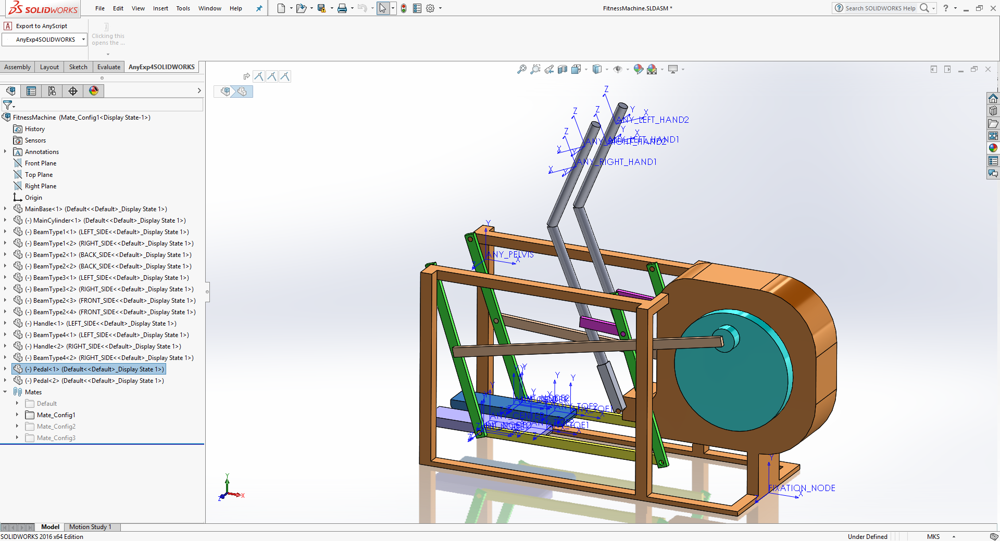
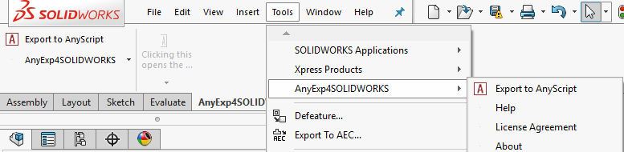
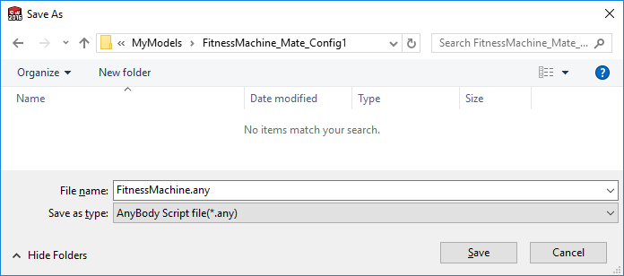
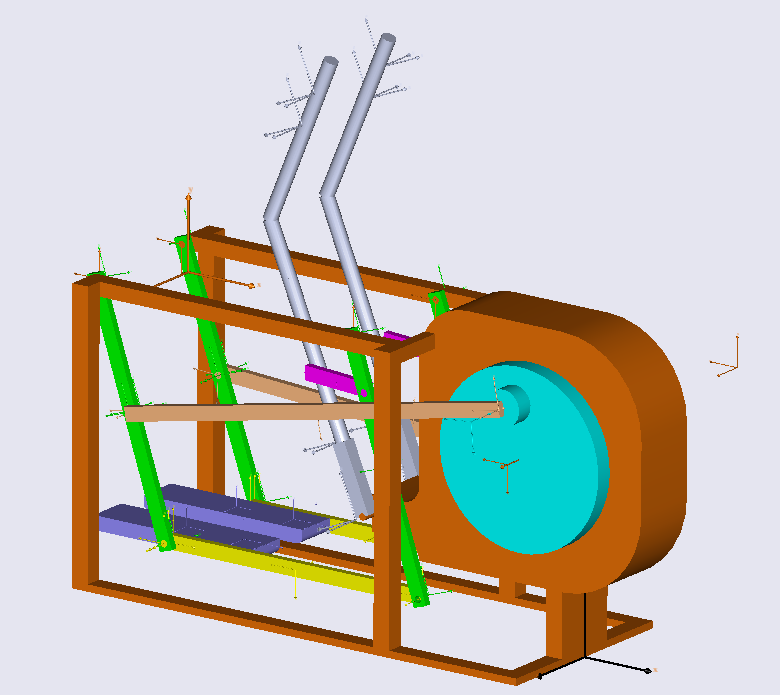
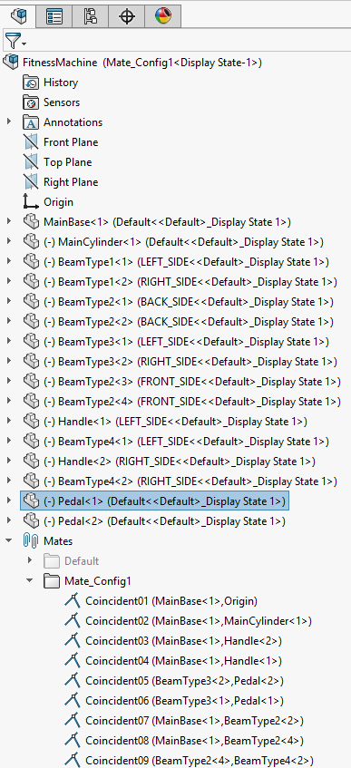
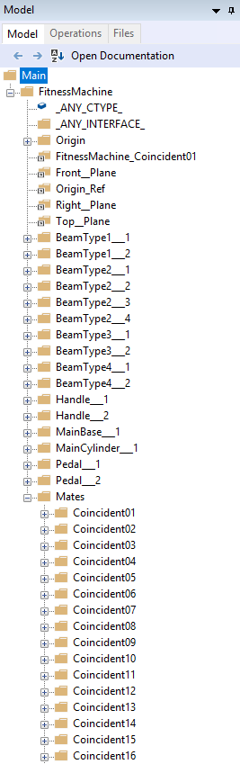
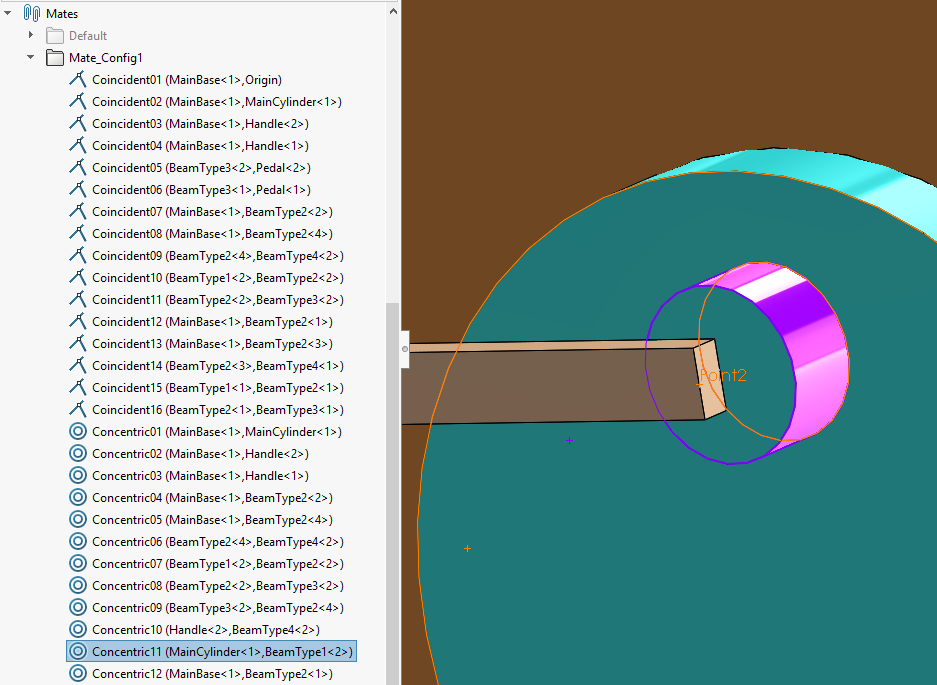
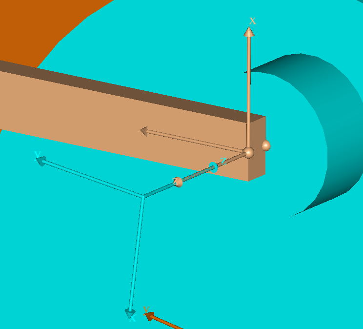

Translating a SOLIDWORKS CAD model to AnyBody#
Start by downloading the example SOLIDWORKS CAD assembly
After having downloaded and opened this model in your SOLIDWORKS environment, you will see the following image.

As you can see, this SOLIDWORKS assembly contains several parts and mates. The assembly has three different configurations, each managing different sets of mates. We will discuss the purpose of these different configuration settings later.
The role of the mates in this model is as follows. The ‘MainBase’ part should be fixed to the global origin. And the other parts should be connected to this base and each other by the mates. The total number of DOF (degrees-of-freedom) of this model should be one.
Let us try to translate this model into a corresponding AnyScript model. If you have registered the AnyBody Exporter™ for SOLIDWORKS® (AnyExp4SOLIDWORKS™) add-in successfully, then you will see the menu of the AnyExp4SOLIDWORKS add-in on the SOLIDWORKS menu like this:

Start the translation process by selecting the ‘Export to AnyScript’ menu item. Doing this will display the following dialog.

In this dialog you can choose various options for the translation process such as indentation method, constraint type for mates, STL file type and so on. If you press the OK button after having decided the options you want to use, you will see a file dialog asking you to choose where your files will be saved. For this tutorial we shall use the default options settings. You can change the location and the file name to be what you want for this example.

If you look at the folder where you saved your own files, then you will see that there are two AnyScript files (FitnessMachine.any and FitnessMachine.main.any) and several STL files.
Let’s try to open the ‘FitnessMachine.main.any’ file using the AnyBody Modeling System. It should look like this:
...
// This AnyScript file was automatically generated by the AnyExp4SOLIDWORKS translator add-in.
// Translation date: Wed Oct 17 14:09:24 2012
// AnyExp4SOLIDWORKS Version: 1.0.0
Main =
{
#include "FitnessMachine.any"
};
This ‘FitnessMachine.main.any’ file just includes the ‘FitnessMachine.any’ file. When you load it, you will see that several ANYSURF3 files are created from the STL files.

After loading this file, we should check which properties of the SOLIDWORKS assembly could be translated into AnyScript. These properties are:
The SOLIDWORKS assembly model structure
The part information (mass property, initial position, STL geometry file, color)
Mate information between the different parts in the assemblies
SOLIDWORKS assembly model structure#
Let us compare the SOLIDWORKS Feature Tree and the AnyBody Model Tree.
 
First, the top assembly ‘FitnessMachine’ is converted into a corresponding AnyFolder object, which has the same name. All individual parts are converted into corresponding AnySeg objects. Some reference entities such as origin and planes are converted into AnyFixedRefFrame or AnyRefNode objects depending on whether they are fixed or attached to movable parts. Finally, there is an AnyFolder object named ‘Mates’, which contains all converted mate information.
Part information (mass property, initial position and STL geometry file)#
If you look at the information about the ‘Main.FitnessMachine.MainBase___1’ AnySeg object, you will see the following piece of code.
AnySeg MainBase___1 =
{
r0 = {-0.1, 0.55, -8.455958313e-005};
Axes0={ {1, 0, 0}, {0, 1, 0}, {0, 0, 1} };
Mass = 73.1179928;
Jii = {6.221732725, 13.35441288, 17.11071671};
Jij = {0.5751545834, -0.0006960674174, -0.0005824144636};
sCoM = {-0.189906896, -0.04988090848, 1.942340762e-005};
JaboutCoMOnOff = On;
AnyDrawSurf drw =
{
FileName = "FitnessMachine.MainCylinder_cfg0_9c1185a5c5e9fc546128.stl";
Opacity = 1;
RGB = {0.9098039216, 0.4431372549, 0.03137254902};
AnyStyleDrawMaterial1 style =
{
EnableCreasing = On;
CreasingAngle = 0.524;
};
};
AnyRefNode Origin =
{
sRel = {0, 0, 0};
ARel={ {1, 0, 0}, {0, 1, 0}, {0, 0, 1} };
};
...
As you can see here, mass properties, initial position & rotation and geometry information (STL file) were translated into AnyScript.
Mate information#
Generally, all mate information in a CAD assembly model can be regarded as kinematic constraints. Based on these constraints, you can move the assembly models inside the CAD system. All these mate objects are translated into corresponding kinematics constraints in AnyScript, such as AnyKinEq, AnyKinEqSimpleDriver or some standard joint types like AnyRevoluteJoint, AnySphericalJoint..
Let us select one mate in the assembly and look at it in detail inside SOLIDWORKS.

The ‘Concentric11’ mate was established between MainCylinder-1 and BeamType1-2 components. In the above picture, the selected violet cylinder is included in the MainCylinder-1 component, and the selected orange point is included in the BeamType1-2 component. So this mate is the concentric mate between a point and a cylinder. This means that the orange point (on BeamType1<2> component) can translate and rotate on the axis of this violet cylinder (on MainCylinder<1>). So this mate can be translated into two linear constraints in the corresponding AnyScript model.
The AnyScript code for the Concentric11 mate is as follows:
AnyKinEqSimpleDriver Concentric11 =
{
AnyKinLinear lin =
{
AnyRefFrame& base = ...MainCylinder___1.FitnessMachine_Concentric11;
AnyRefFrame& target = ...BeamType1___2.FitnessMachine_Concentric11;
Ref = 0;
};
MeasureOrganizer = {0, 1};
DriverPos = {0, 0};
DriverVel = {0, 0};
CType = {.._ANY_CTYPE_, .._ANY_CTYPE_};
};
Where we notice that the ‘MeasureOrganizer’ selects two of the three translational measurement defined by the AnyKinLinear object. The following picture shows the relationship between these two components.

Here you can see that the AnyKinLinear kinematic measure, which is defined between the ‘FitnessMachine_Concentric11’ AnyRefNode object of the ‘BeamType1___2’ AnySeg object (dark orange color) and the ‘FitnessMachine_Concentric11’ AnyRefNode object of the ‘MainCylinder___1’ AnySeg object (cyan color), should have its x and y coordinates as zero position and velocity values. The AnyRefNode objects called ‘FitnessMachine_Concentric11’ on both AnySeg objects were created automatically by the translation process for the sole purpose of creating these constraints.
Finally notice that the ‘Reaction.Type’ of these constraints is ‘On’ as default, since it has not been set by the translator. This implies that reaction forces associated with the constraints are indeed active. Also notice the constraint type (‘CType’), which is set to parametric value, ‘_ANY_CTYPE_’, defined by the translator. The parameter, ‘_ANY_CTYPE_’, can later be modified in the AnyScript model, or by a new translation of the model.
With this we will conclude our brief review of the translated model and now let us go to the next Lesson2.